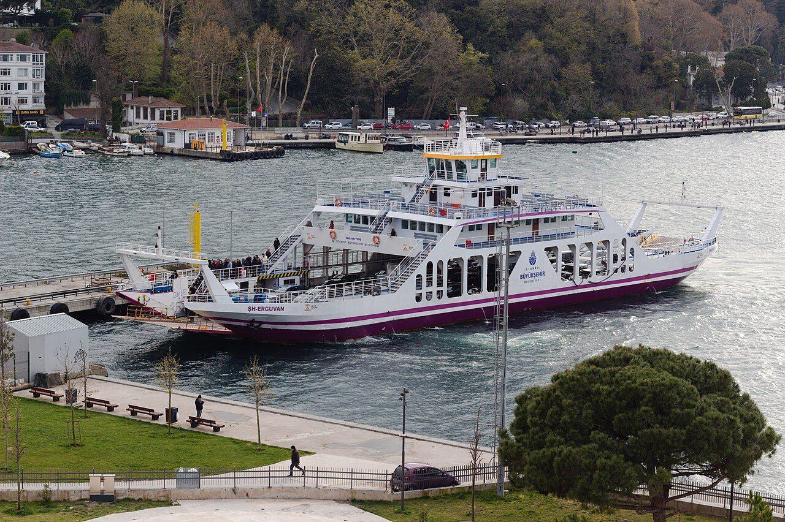
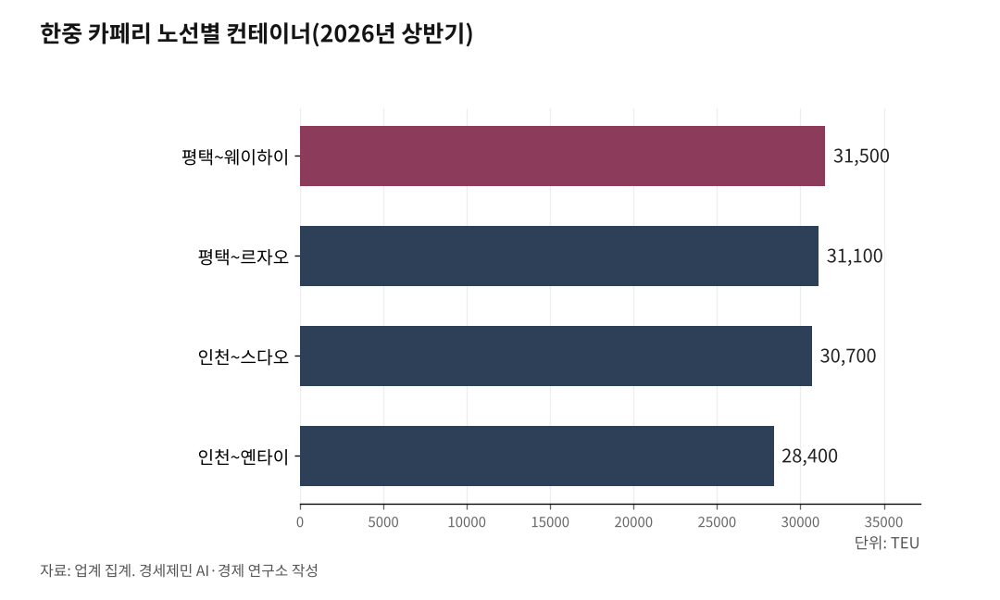

[환황해 철도망⑥] 선령 30년에 걸린 한중 카페리, 새 배는 대부분 중국 조선소에서
항권 16개 노선 가운데 4개 운항 중단, 짐은 2026년 상반기 5.3% 증가
인천에서 배로 옌타이, 열차와 트럭으로 중앙아시아까지 12일
신조 카페리 발주와 계약 잇따라, 인천~톈진은 9월 30일 출항 6년 만의 시범운항
AI경제저널=김갑봉 기자 | 한국 화물이 중국 철도를 타려면 먼저 배를 탄다. 인천과 평택, 군산을 떠난 한중 카페리가 황해 건너 중국 항만에 짐을 내린다. 두 나라 정부는 이 배를 서른 살까지만 쓰기로 합의했다. 그 나이에 닿은 배가 하나둘 항로를 떠나고 있다.

16개 노선 가운데 4개 멈춤, 짐은 증가
한중 카페리는 사람과 컨테이너를 함께 싣는 배다. 코리아쉬핑가제트 보도로는 2026년 8월 항권이 나온 노선이 열여섯이다. 이 가운데 넷이 멈춰 있다. 인천~톈진은 2020년 2월 천인호가 선령 30년에 닿아 멈췄다. 평택~룽청은 2025년 4월 빌린 배를 돌려준 뒤 대체선을 못 구했다.
대인훼리의 인천~다롄은 2026년 1월 운항을 쉬었다. 범영훼리의 인천~잉커우는 4월에 멈췄다. 두 노선 모두 배가 제한 선령을 넘겼다. 대체선은 구하지 못했다. 두 나라 정부는 이런 노선에 컨테이너선을 대신 넣으려면 신조선부터 발주하게 했다.
짐은 늘었다. 한중카페리협회 집계로 2025년 컨테이너는 58만1589TEU로 2.9% 늘었다. 업계 집계로 2026년 상반기 열두 노선의 컨테이너는 29만1800TEU로 1년 전보다 5.3% 많다. 업계는 멈춘 노선 몫을 남은 노선이 받아 냈다고 풀이한다.
멈춘 뱃길 하나는 시범운항에 나섰다. 위동항운의 뉴골든브리지5호가 2026년 10월 1일 톈진에 닿았다가 인천으로 떠났다. 6년여 만이다. 위동항운은 9월 말 시범운항 뒤의 정기 취항 계획은 아직 없다고 밝혔다.

인천~옌타이 뱃길과 중앙아시아 열차
2026년 상반기 열두 노선 가운데 열 곳의 물량이 1년 전보다 늘었다. 1~3위는 평택~웨이하이 3만1500TEU, 평택~르자오 3만1100TEU, 인천~스다오 3만700TEU였다. 인천~옌타이는 2만8400TEU로 28% 늘어 여섯째였다.
증가율 1위는 인천~단둥으로 451%다. 이 노선은 2025년 4월에야 다시 열렸다. 비교 대상인 1년 전 물량이 작아 생긴 큰 숫자다. 옌타이 두 노선은 2025년에도 크게 늘었다. 평택~옌타이 28.7%와 인천~옌타이 16.5%다.
옌타이항은 이 짐을 철길로 잇는다. 2025년 5월 14일 인천에서 배로 온 상용차와 부품을 실은 열차가 옌타이항을 떠났다. 운송사는 화물 서류 한 장으로 배와 열차를 이었다. 중앙아시아까지 25일 걸리던 길이 12~14일로 줄었다. 신화사는 여러 화주의 작은 짐을 모은 첫 원스톱 열차라고 불렀다.
2026년 7월 21일에는 X80442 열차가 옌타이항을 떠났다. 인천에서 온 짐을 싣고 신장 카스까지 달린 뒤 트럭으로 키르기스스탄 비슈케크에 닿는다. 전 구간 12일이다. 신화사는 이 열차도 배·철도·도로를 서류 하나로 묶은 첫 열차라고 전했다. 배가 멈추면 이 길도 함께 끊긴다.
서른 살 제한에 물러난 크레인 하역 카페리
경인일보는 2025년 2월 인천~중국 카페리 열 척 가운데 다섯 척이 2027년까지 기한에 닿는다고 보도했다. 인천~톈진 배는 이미 넘겼다. 나머지 넷은 2027년 5월까지 닿는다. 새 배를 못 구하면 정부는 해운법으로 운항권을 취소할 수 있다.
실제 취소도 나왔다. 해양수산부는 2025년 2월 인천~톈진 선사 진천국제객화항운의 운항권을 거둬들였다. 1990년 한중 카페리 항로가 열린 뒤 처음이다. 코리아쉬핑가제트는 2025년 11월 대인훼리 비룡호가 2026년 1월, 범영훼리 자정향호가 5월에 선령 만기를 맞는다고 적었다.
두 노선은 실제로 1월과 4월에 멈췄다. 위동항운 뉴골든브리지5호의 만기는 2026년 10월(코리아쉬핑가제트)과 2027년 1월(인천일보)로 기록이 엇갈린다. 자정향호가 멈추면서 크레인 하역 카페리 한 세대가 저물었다. 향설란호와 신욱금향호, 자옥란호에 이은 넷째다.
넷은 크레인으로 컨테이너를 올리고 내리는 카페리다. 1995~1996년 독일 MTW에서 두 척, 네덜란드 메르베데에서 두 척을 지었다. 빈자리는 당분간 컨테이너선이 메운다. 진인해운과 연운항훼리는 허위안1호와 텐주피터호를 각각 넣었다. 사람은 태우지 못하는 배다.
중고선으로 메우기도 어렵다. 2024년 9월 한중해운회담은 중고선 선령 제한을 10년에서 15년으로 풀었다. 그러나 이 항로에 맞는 중고 카페리가 시장에 거의 없다는 것이 업계 설명이다. 코로나 때 여객을 싣지 못한 선사들의 자금도 말랐다.
신조선 네 척, 짓는 곳은 대부분 중국
새 배 값도 올랐다. 한 업계 관계자는 2025년 2월 600억~700억원이던 카페리 건조비가 1000억원을 넘는다고 경인일보에 말했다. 업계는 코로나 뒤 원자재값이 올라 선박 가격이 30% 넘게 뛴 점도 걸림돌로 꼽았다.
진인해운은 인천~친황다오에 넣을 2만9600t급을 중국 우후조선소에 맡겼다. 2025년 8월 건조에 들어갔고 2026년 12월 인도 예정이다. 연운항훼리는 2025년 8월 중국 황하이조선에 3만8500t급을 발주했다. 납기는 2028년 4월이다.
인천일보 보도로는 위동항운도 2025년 3만t급 두 척을 발주했다. 한 척을 더 지을 선택권도 있다. 첫 배는 2028년 인도가 예상된다. 코리아쉬핑가제트는 2025년 12월 이를 발주 예정으로 적어 기록이 엇갈린다.
대인훼리와 범영훼리의 발주까지 확정되면 신조선은 여섯 척이 된다. 한 선사 관계자는 국내에서 지으면 대출이 어려워 자기자본을 절반까지 대야 한다고 코리아쉬핑가제트에 말했다. 중국 조선소는 금융까지 묶어 준다. 배를 짓는 일과 돈줄을 함께 중국에 기대는 셈이다.
제도도 신조로 기울었다. 2026년 6월 제28차 한중해운회담에서 두 나라는 새 카페리 항로에 신조선 투입을 원칙으로 삼았다. 새 항로에서는 신조를 전제로 한 임시 컨테이너선 투입도 허용하지 않기로 했다. 인천~톈진은 위동항운이 맡고 대산~석도 항로는 새로 열기로 했다.
신조선과 겹치는 국제 탄소 규제
새 배가 들어오는 2026~2028년은 국제 탄소 규제가 바뀌는 때와 겹친다. 국제해사기구(IMO)는 2025년 4월 넷제로 프레임워크를 승인했다. 총톤수 5000t이 넘는 외항선에 연료 온실가스 기준을 매기고 배출에 값을 물린다. 새 카페리는 모두 이 크기를 넘는다.
채택은 늦어지고 있다. IMO는 2025년 10월 임시회의에서 채택 논의를 1년 미뤘다. 2026년 4월 말 제84차 해양환경보호위원회도 절충점을 찾지 못했다. 로이드선급은 원안 채택파와 시장 준비 우선파가 맞섰다고 적었다.
9월 회기간 회의에서도 의견은 갈렸다. 마리타임이그제큐티브는 미국과 산유국이 반대를 이어 갔다고 전했다. 11월 23일 회기간 회의와 11월 30일 제85차 위원회가 열린다. 임시회의는 12월 4일 하루 다시 열 예정이다. 제85차 회의가 결론을 내야 열린다는 조건이 붙었다.
박성은·안승범(2018)은 2015년 설문으로 카페리를 고르는 화주가 신속성에 0.549, 안정성에 0.309, 경제성에 0.142의 중요도를 둔다고 분석했다. 카페리 운임이 정기 컨테이너선보다 두 배 넘게 비싸다는 점도 짚었다. 카페리를 고르는 화주는 운임보다 속도를 산다.
지켜볼 일은 셋이다. 첫째는 진인해운이 12월에 신조선을 예정대로 넘겨받는지다. 둘째는 인천~톈진이 시범운항 뒤 언제 정기 취항하는지다. 셋째는 12월 IMO가 넷제로 규정을 채택하는지다. 셋 모두 한국 화물이 배에서 대륙 열차로 갈아타는 길의 폭을 정한다.
※ 이 기사는 AI 프로그램 클로드를 활용해 작성했습니다.
참고문헌
공식 발표자료와 공공기록
· 해양수산부 해운정책과, "제28차 한·중 해운회담, 컨테이너·카페리 항로 관리 방안 등 논의", 해양수산부 보도자료, 2026.6.5., https://www.mof.go.kr/doc/ko/selectDoc.do?docSeq=66881&bbsSeq=10&menuSeq=971
· 국제해사기구(IMO), "IMO net-zero shipping talks to resume in 2026", 2025.10.(회기 2025.10.14~17), https://www.imo.org/en/mediacentre/pressbriefings/pages/imo-net-zero-shipping-talks-to-resume-in-2026.aspx
· 국제해사기구(IMO), "The IMO Net-Zero Framework - FAQs", 갱신일 표기 없음(2026.10.14. 열람), https://www.imo.org/en/mediacentre/hottopics/pages/faqs-the-imo-net-zero-framework.aspx
· Lloyd's Register, "MEPC 84 Summary Report", 2026.5.1., https://www.lr.org/en/knowledge/regulatory-updates/imo-meetings-and-future-legislation/mepc-84-summary-report/
연구보고서와 논문
· 박성은·안승범, "한·중 FTA 체결에 따른 수도권항만 카페리선사의 발전방안", 한국항만경제학회지 제34집 제1호, 2018.3., 111-132쪽, https://koreascience.kr/article/JAKO201821142176920.pdf
언론 보도
· 이경희, "기획/ 수요 늘고 노선 줄고 …한중카페리 영업실적 급반등", 코리아쉬핑가제트, 2026.8.19., https://www.ksg.co.kr/news/main_newsView.jsp?pNum=147821
· 이경희, "선령 제한 직면한 한중 카페리선사들 신조 발주 줄이어", 코리아쉬핑가제트, 2025.11.12., https://www.ksg.co.kr/news/main_newsView.jsp?pNum=145795
· 코리아쉬핑가제트, "송년특집 / [2025년 10대 뉴스] 05 줄줄이 30년 제한 도래…한중항로 카페리선 신조 붐", 2025.12.30., https://www.ksg.co.kr/news/main_newsView.jsp?pNum=146207
· 쉬핑뉴스넷, "2025년 한중카페리항로 컨화물, 전년대비 2.9% 증가한 58만1589TEU로 선방...여객수송은 21.5% 增", 2026.1.14., https://www.shippingnewsnet.com/news/articleView.html?idxno=68595
· 김주엽, "최장 30년 선령 제한… 암초 만난 한중카페리", 경인일보, 2025.2.4., https://www.kyeongin.com/article/1728206
· 이종선, "사상 초유 '운항권 취소' 인천~톈진 한중카페리 험난한 복원길", 인천투데이, 2025.3.6., https://www.incheontoday.com/news/articleView.html?idxno=264301
· 정혜리, "6년 멈춘 인천~톈진 뱃길, 다시 띄우나", 인천일보, 2026.8.24., https://www.incheonilbo.com/news/articleView.html?idxno=1330292
· 정혜리, "인천~톈진 카페리 항로 기지개…30일 시범 운항", 인천일보, 2026.9.27., https://www.incheonilbo.com/news/articleView.html?idxno=1332887
· 周亚强, "天津邮轮母港迎"三船同靠" 单日出入境客流创年内新高", 中国新闻网, 2026.10.1., https://www.chinanews.com.cn/cj/2026/10-01/10706926.shtml
· 冯媛媛·刘洋·张亚楠, "新华全媒+丨山东烟台发出全国首趟一站式跨境"零散货源"班列", 新华网(商洛之窗 재게재), 2025.5.15., https://www.slrbs.com/news/guoji/2025-05-15/1681690.html
· 张钟仁·邵琨, "我国首趟跨境海铁公"一单制"班列成功开行", 新华网, 2026.7.21., https://www.news.cn/20260721/79808170b8c547558349df351c759446/c.html
· Redaktionen, "Sjælden type passager-containerskib skrottes", Maritime Danmark, 2021.3.11., https://www.maritimedanmark.dk/sjaelden-type-passager-containerskib-skrottes
· The Maritime Executive, "IMO Concludes Next Round of Net-Zero Discussions Still Divided", 2026.9.4., https://maritime-executive.com/article/imo-concludes-next-round-of-net-zero-discussions-still-divided
사진 출처
· [대표사진] Antoloji, "Istanbul car ferrie ŞH-Erguvan.jpg", 위키미디어 공용, CC0, https://commons.wikimedia.org/wiki/File:Istanbul_car_ferrie_%C5%9EH-Erguvan.jpg
※ 이 기사는 인공지능을 활용해 작성했습니다.
관련기사
- [환황해 철도망⑦] 제재 밖 북한 텅스텐, 3월 3257만달러에서 8월 28만달러로
- [환황해 철도망⑤] 북한 교역액의 98.2%는 중국, 국경을 넘는 철길 문은 넷
- [환황해 철도망⑧] 열차페리 1~3년, 해저터널 10년 뒤... 첫 단추는 인천신항 인입선
- [환황해 철도망④] 인천항 연안 컨테이너 3년째 0TEU, 끊긴 국내 컨테이너 뱃길
저작권자 © AI경제저널 무단전재 및 재배포, AI학습 및 활용 금지